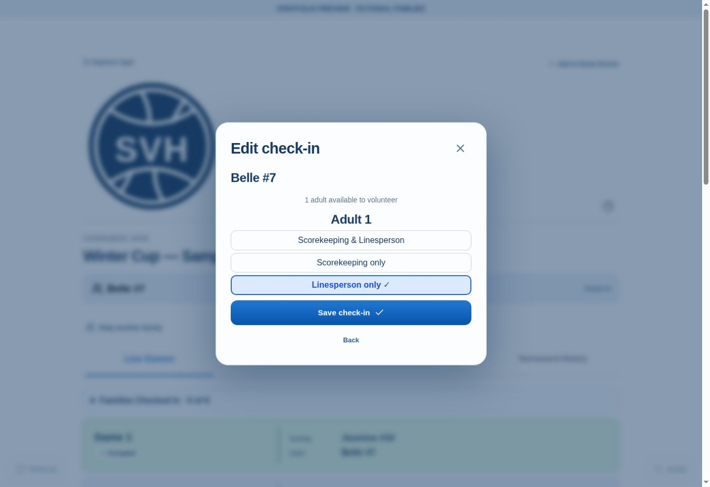
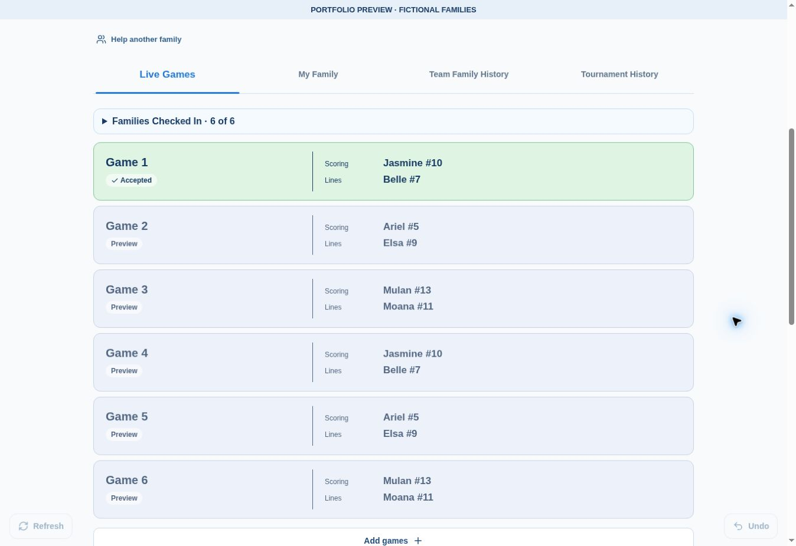
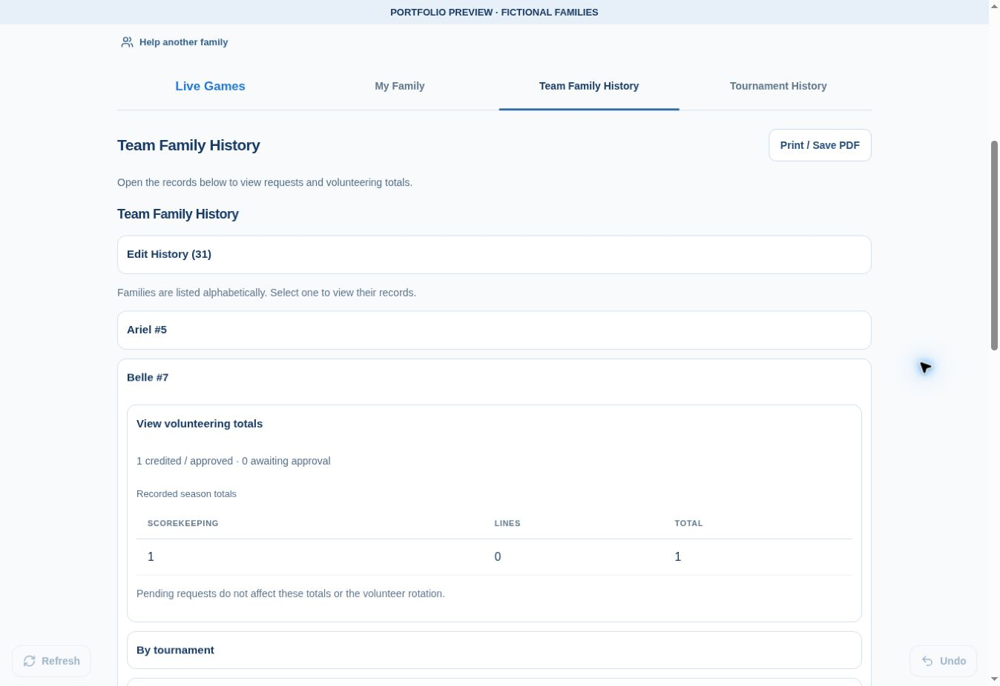

I started this app to help share volunteer duties fairly, without leaving one person responsible for chasing volunteers or deciding whose turn it should be.
Families choose when they’re available and whether they can help with scorekeeping, linesperson duties, or both. No adult names are needed—families simply check in using their child’s first name and jersey number.
The app uses availability and previous volunteering to organize turns. Schedules and volunteering history are accessible to everyone on the team, making it easier to see how responsibilities are shared throughout the season.
My goal is to encourage participation by letting parents offer the help they’re comfortable giving, without feeling pressured to do everything.
I’m developing the app with AI assistance and refining it through testing and parent feedback.
A look inside the app
These screenshots use fictional families.


